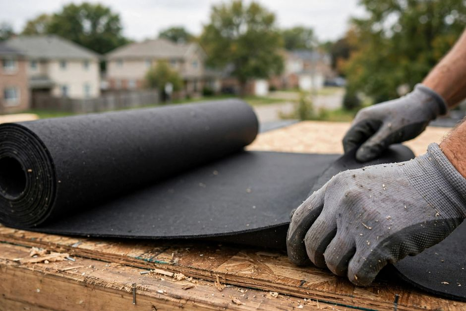
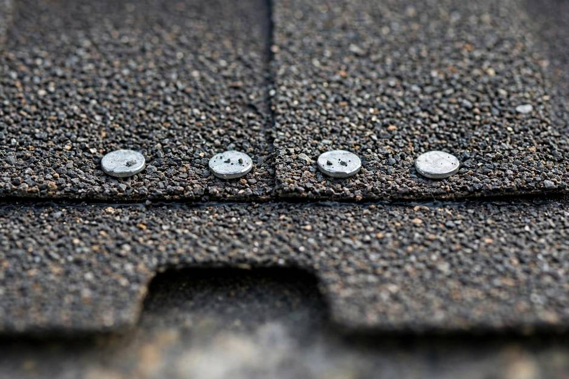
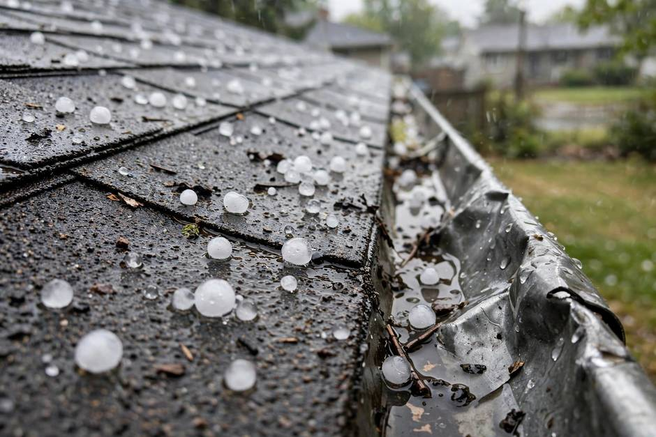
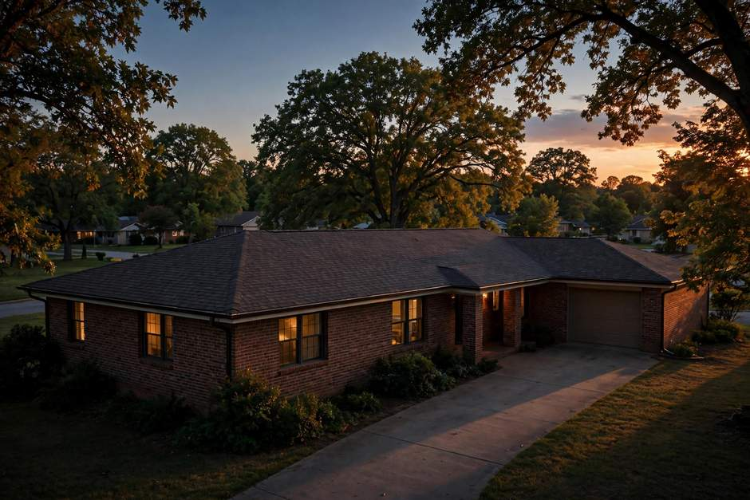

Call (224) 802-4866 during listed hours and describe what you are seeing. The call is the way to confirm scope, terms, and availability for your roof.
Our Services
Roofing services in Des Plaines, IL
The pages below cover the roofing topics this site addresses for Des Plaines homes: repair, replacement, inspection, storm damage, flat roofs, metal and wood shake roofing, gutters, ventilation, and skylights. Each page explains its topic; call to confirm scope and terms for your roof.
01
Google rating5.0 from 14 Google reviews
02
Des Plaines address638 Birchwood Ave, Des Plaines, IL
03
Listed hoursMon–Sat, closed Sunday
04
Phone(224) 802-4866
What we do
What the service pages cover
Each card below links to one service page. Area pages for parts of Des Plaines are listed on the locations page, and general guides are on the blog. Call during listed hours to confirm scope and terms for your roof.

Roof Replacement Full tear-off and replacement when repair no longer fits what an inspection finds. Covers decking, underlayment, ice barrier, flashing, and ventilation topics. Explore →
Roof Repair Leaks, missing or damaged shingles, flashing, and pipe boots — and how the repair-or-replacement decision is made from inspection findings. Explore → Roof Inspection
What an inspection covers: the roof surface, flashing, valleys, penetrations, and accessible attic conditions, with findings recorded in writing.
Explore →
Roof Inspection
What an inspection covers: the roof surface, flashing, valleys, penetrations, and accessible attic conditions, with findings recorded in writing.
Explore →
 Emergency Roof Repair
What to do first when water is coming in or storm damage opens a roof: interior control, safety, documentation, and when to call.
Explore →
Emergency Roof Repair
What to do first when water is coming in or storm damage opens a roof: interior control, safety, documentation, and when to call.
Explore →

Storm Damage Roof Repair Hail and wind damage on one page: granule loss, bruised shingles, creasing, documentation, and the lawful contractor role with insurers. Explore → Flat Roof Repair
Flat and low-slope repair topics: ponding, seams, flashing, drains, and tie-ins where low-slope sections meet pitched roofs.
Explore →
Flat Roof Repair
Flat and low-slope repair topics: ponding, seams, flashing, drains, and tie-ins where low-slope sections meet pitched roofs.
Explore →
 Metal Roofing
Metal roofing for Des Plaines homes: standing seam and exposed-fastener panels, snow shedding, hail behavior, and guide lifespans.
Explore →
Metal Roofing
Metal roofing for Des Plaines homes: standing seam and exposed-fastener panels, snow shedding, hail behavior, and guide lifespans.
Explore →
 Wood Shake Roofing
Cedar and wood shake topics: maintenance reality in Illinois humidity, guide lifespans, and why existing shake must be removed rather than overlaid.
Explore →
Wood Shake Roofing
Cedar and wood shake topics: maintenance reality in Illinois humidity, guide lifespans, and why existing shake must be removed rather than overlaid.
Explore →
 Gutter Installation
Gutters, downspouts, fascia, and soffits as the roof’s drainage and ventilation edge — and how failed gutters feed ice dams.
Explore →
Gutter Installation
Gutters, downspouts, fascia, and soffits as the roof’s drainage and ventilation edge — and how failed gutters feed ice dams.
Explore →
 Roof Ventilation Installation
Attic ventilation as part of the roof assembly: intake and exhaust, the ice-dam mechanism, and the limits of ventilation alone.
Explore →
Roof Ventilation Installation
Attic ventilation as part of the roof assembly: intake and exhaust, the ice-dam mechanism, and the limits of ventilation alone.
Explore →
 Skylight Installation
Skylight topics: flashing and curbs as repeat leak points, the reflash-or-replace question, and work bundled with re-roofing.
Explore →
Skylight Installation
Skylight topics: flashing and curbs as repeat leak points, the reflash-or-replace question, and work bundled with re-roofing.
Explore →
 Roof Insurance Claim Help
General information about the claim process after storm damage: documentation, the adjuster visit, and what Illinois law requires of contractors.
Explore →
Roof Insurance Claim Help
General information about the claim process after storm damage: documentation, the adjuster visit, and what Illinois law requires of contractors.
Explore →
From call to complete
How Our Roofing Process Works
An inspection looks at the roof surface, flashing, valleys, penetrations, and accessible attic conditions, and records what is found so the estimate reflects the roof as it is.
Pricing comes from a written on-site estimate that sets out the scope discussed. No price on this site is presented as this business’s price.
Scheduling, materials, and the order of work are agreed before work starts. Permit and inspection questions are worth raising at this stage, before work begins.
The work is walked through when it is finished, so questions about what was done can be raised while the details are still fresh.

STEP 01Call to discuss your roof
Call (224) 802-4866 during listed hours and describe what you are seeing. The call is the way to confirm scope, terms, and availability for your roof.
Our standard
What to know before you call
A roof decision starts with questions: what is wrong, what the options are, and what the work involves. The facts on this site that can be checked are the address, the listed hours, and the Google reviews. Scope and price are for a phone conversation and a written estimate.
Written estimate before work
Pricing comes from a written on-site estimate, not from a figure on this site. The published guides quoted in the blog disagree with each other, which is why no price is presented here as this business’s price.
Des Plaines housing and climate
Most Des Plaines homes were built before 1980, with a median year built of 1966 (ACS 2019–2023). Freeze–thaw winters, snow, and summer storms shape what goes wrong — and what an inspection looks for.
Ask before you decide
Call during listed hours to confirm scope, terms, and availability for your roof. No license, warranty, brand, insurance-outcome, or response-time claim is made anywhere on this site.
Good questions
Questions about the services on this site, answered
Common questions about what the service pages cover, answered in general terms. For questions about a particular roof, call during listed hours.
(224) 802-4866 →Twelve: roof replacement, roof repair, storm damage roof repair, roof inspection, emergency roof repair, flat roof repair, metal roofing, wood shake roofing, skylight installation, roof ventilation installation, gutter installation, and insurance-claim help. Each has its own page. Whether a particular service fits a particular roof is an inspection finding, confirmed when you call.
No commercial roofing page is published on this site. Commercial work requires an Unlimited Illinois roofing license, and no license tier has been confirmed for publication here. If you need commercial roofing, call (224) 802-4866 during listed hours and ask.
Gutters, downspouts, fascia, and soffits are covered as the roof’s drainage and ventilation edge, on the gutter installation page — not as a standalone gutter-company service. Gutter cleaning is not listed as a standalone service. New gutters alone do not prevent ice dams.
No firm pricing has been supplied for publication, and published guides disagree widely by job size, scope, and method. The guides are shown attributed, with sources and dates, and pricing for a particular roof comes from a written on-site estimate.
General process education only: documenting damage promptly, the homeowner filing the claim, and what a contractor may do — an estimate that may be submitted to the insurer, and conferring with the insurer’s representative. It does not offer claim representation, negotiation, or any insurance outcome. This is general information, not legal advice.
Ready when you are
Roofing in Des Plaines, IL — call during listed hours
WP Exterior Inc is based at 638 Birchwood Ave, Des Plaines, IL 60018. Call (224) 802-4866 during listed hours to discuss your roof.
Call (224) 802-4866 →
Phone and address
Contact WP Exterior Inc
Call (224) 802-4866 during listed hours to discuss your roof. WP Exterior Inc is based at 638 Birchwood Ave, Des Plaines, IL 60018. There is no contact form and no email address for this business on this site — the phone is the contact channel.
Call during listed hours(224) 802-4866
Address638 Birchwood Ave, Des Plaines, IL 60018
Office hoursMon–Tue 7:30 AM–7:00 PM · Wed–Fri 7:30 AM–7:30 PM · Sat 8:30 AM–5:00 PM · Sun closed